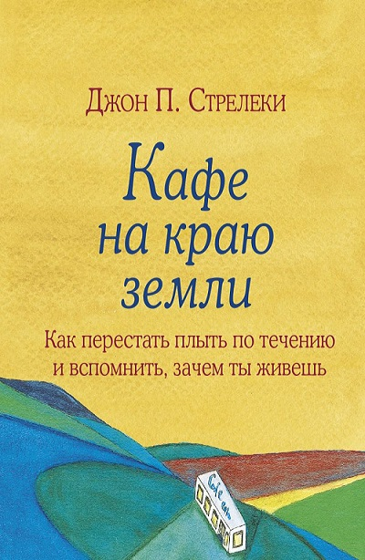

"После долгого блуждания в темноте и неизвестности все, что вам нужно — зайти в уютное кафе, выбрать столик и раскрыть меню."

Каждому из нас необходимо хоть раз остановиться посреди суеты и тревог современного
мира и ответить на главный вопрос:
«Почему я здесь?».
Понять, что действительно значимо, увидеть цель своей жизни в дымке
будущего и двигаться к ней, каждый день ощущая себя счастливым.
Эта книга вдохновит вас на перемены, о которых сегодня вы можете только мечтать.
Автор книги Джон П. Стрелеки - талантливый писатель, спикер и коуч.
Будучи еще бизнес-констультантом, Джон с женой отправился в 9ти месячное
путешествие по миру. Этот опыт вдохновил его на написание книги
"Кафе на краю земли", которая в последствии стала бестселлером.
Каждый из нас хотя бы раз в жизни оказывался в кафе "Почему".
Это место, в которое ты приходишь растерянный, с вопросами "Зачем всё это?",
"Счастлив ли я?". А уходишь с подсказками и ясным пониманием как жить дальше.
Эта книга не пособие по тому, как вам жить, эта книга инструмент, применяя который
вы поймете куда вам двигаться дальше. Джон П. Стрелеки знает, как найти ответы.
А чтобы поиск не был утомительным, автор облек его в небольшое повествование.
Его книга "Кафе на краю земли" - приятное и вдохонвляющее чтение для тех,
кто немного заблудился в собственной жизни, но не собирается опускать руки,
а даже наоборот, хочет вернуться на свой путь.
Сейчас я задам вам неожиданный вопрос: Боитесь ли вы смерти?
Казалось бы, книга о том, как начать снова жить полной насыщенной жизнью, вернувшись к понимаю своего Я. К чему тогда этот вопрос?
Всё дело в том, что если ответ на вопрос положительный, значит вы разучились жить
здесь
и
сейчас,
и видеть красоту мира, возможности и открытые двери, забыли про самого себя.
Если и вы призадумались над ответом на вопрос, то 100% рекомендую данную книгу к прочтению, чтобы не откладывать свою жизнь и свои интересы на потом.
Книга в свою очередь поможет сформулировать необходимые в данный момент для вас вопросы, ответив на которые, вы поймете, что по-настоящему является важным для вас и какую жизнь вы можете прожить, если ничего не убирать в ящик.
Налейте себе чашечку кофе и приступайте к прочтению, вернее к пути самопознания и своих истенных желаний!